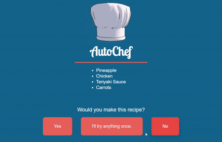

AutoChef is a program that was written in two days for the PickHacks 2019 Hackathon. It is a system that takes unsual combinations of food and through user feedback learns how to develop better and better recipes.
It is written in Python and uses a JavaScript webserver to take user input from an HTML and CSS frontend.
You can find the GitHub repository for it here.
